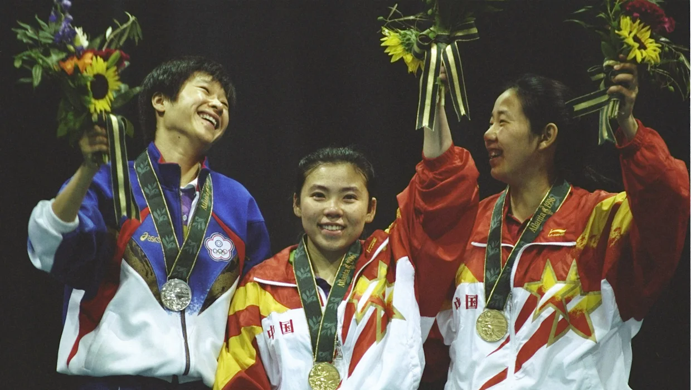

China la cuna del Tenis de Mesa
Actualmente el deporte del Tenis de Mesa es el deporte nacional de este país. El deporte desde un principio quería ser infundado en los países para difundir el comunismo
en 1949 desde un principio, hubo líderes comunistas como Mao Zedong y Zhou Enlai apoyando el movimiento. Mao decreto que el deporte nacional en China fuera el Tenis de Mesa.
Hizo un movimiento para ello, ubicando a un entrenador en cada localidad de china, en busca de niños con reflejos agudos y excelente coordinación de ojo-mano. Y todo esto Montagu, era para “reconectar a China con el mundo”.

El actual campeon olimpico y mundial, ocupa en marzo de 2020 el puesto n°3 del ranking mundial de la Federacion Internacional de Tenis de Mesa
A lo largo de los años, los chinos han dejado huella en el Grand Slam, Juegos Olímpicos,
torneo mundial, etc. Haciendo un promedio entre 75% victorias ganadas en cada campeonato jugado por cada delegación.
Ningún deporte tuvo un dominio tan grande en Juegos Olímpicos como el tenis de mesa por parte de los
chinos, el cual comenzó a disputarse en Seúl 1988. Desde entonces ganaron 16 medallas doradas.
En la temporada de los Juegos Pekín 2008, China tenía los cuatro primeros nombres del ránking mundial masculino (Wang Hao, Ma Lin, Ma Long y Wang Liqin) y los cinco del femenino (Zhang Yining, Guo Yue, Li Liaoxia, Guo Yan y Wang Nan).
Con un máximo de tres jugadores por equipo, era más difícil para un chino conseguir un cupo en la selección de su país que ganar medallas Olímpicas… Los expertos creen que hasta un equipo de reserva de China es capaz de asegurar la misma cantidad
de medallas que el oficial. Como local, China ganó las ocho competencias de tenis de mesa en Pekín 2008: dos oros por equipo y seis individuales. Fue una victoria inédita para un Juego Olímpico.
Ranking
Masculino
| Ranking |
Nombre |
Delegacion |
| 1 |
FAN Zhendong |
CHN |
| 2 |
MA Long |
CHN |
| 3 +1 |
Hugo CALDERON |
BRA |
| 4 +1 |
Tomokazu HARIMOTO |
JPN |
| 5 +3 |
LIANG Jingkun |
CHN |
| 6 +3 |
Dimitrij OVTCHAROV |
GER |
| 7 -1 |
LIN Yun-Ju |
BRA |
| 8 +2 |
Timo BOLL |
JPN |
| 9 -6 |
XU XIN |
CHN |
| 10 -3 |
LIN Gaoyuan |
GER |
Femenino
| Ranking |
Nombre |
Delegacion |
| 1 +1 |
SUN Yingsha |
CHN |
| 2 |
CHEN Meng |
CHN |
| 3 |
Mima ITO |
JPN |
| 4 |
WANG |
CHN |
| 5 |
Yidi |
CHN |
| 6+10 |
Hina HAYATA |
JPN |
| 7+5 |
DOO Hoi Kem |
HKG |
| 8-1 |
Kasumi ISHIKAWA |
JPN |
| 9 |
FENG Tianwei |
SGP |
| 10+5 |
JEON Jihee |
KOR |
En Londres 2012, debido a una regla nueva, apenas dos jugadores por país pudieron participar de las competencias individuales para dar la oportunidad a otros atletas.
Sin embargo, los chinos siguieron sumando oros (masculino y femenino individual, y masculino y femenino por equipos). El sistema de caza talentos entre los niños aún está en vigor,
y la disciplina de entrenamiento es militar, con por lo menos siete horas diarias de trabajo. Existe una liga nacional con clubes por ciudades y un ránking individual. Actualmente,
los mejores atletas del tenis de mesa son celebridades y están muy bien pagos.
China gana el oro frente a Japon
La Mayoria Victoria
Desde Seúl 1988 hasta Río 2016, China ha ganado 53 medallas, incluidos 28 oros, 17 platas y 8 bronces en tenis de mesa.
Los mejores resultados se dieron en Atlanta 1996 (4 de oro, 3 de plata, 1 de bronce), Sídney 2000 (4 de oro, 3 de plata,
1 de bronce) y Pekín 2008 (4 de oro, 2 de plata, 2 de bronce).
Con esos espectaculares resultados está claro porque se conoce a China como la gran potencia mundial del ping pong.

Yaping Atlanta 1996
Los Jugadores Clave
Nueve jugadores de tenis de mesa chinos han dominado el deporte durante años y han logrado el grand slam de tenis de mesa (ganando los títulos en los Juegos Olímpicos,
los Campeonatos del Mundo y la Copa del Mundo). DENG Yaping fue la primera de ellos.
Deng, que ganó medallas de oro en individuales y dobles en Barcelona 1992, repitió la hazaña en Atlanta 1996 y fue la primera atleta china en ganar cuatro medallas de oro en el tenis de mesa Olímpico.
También es la primera de las dos únicas atletas que defendieron un título Olímpico individual, siendo la otra ZHANG Yining.
Zhang, quien encabezó el podio Olímpico en Atenas 2004 y Pekín 2008, es la única jugadora en la historia del tenis de mesa que ha logrado el Grand Slam dos veces. Aparte de sus dos oros Olímpicos,
también es cuatro veces ganadora de una Copa del Mundo y dos veces Campeona del Mundo.
En el equipo masculino, el actual entrenador de la selección nacional china LIU Guoliang fue el primer jugador chino en lograr el Grand Slam. Comenzó con la medalla de
oro Olímpica en Atlanta 1996 y ese mismo año subió a lo más alto del podio de la Copa del Mundo. En 1999 completó el grand slam con el título del campeonato mundial.
Luego, el medallista de oro de Londres 2012, ZHANG Jike, fue el más rápido en alcanzar esta hazaña, y solo tardó 445 días (entre 2011 y 2012) en ganar un oro Olímpico, un Campeonato del Mundo y una Copa del Mundo.
Xu Xin vs Ma Long
¿Qué pasó después?
En Tokio 2020, el doble mixto se ha agregado al programa Olímpico por primera vez y, como resultado, habrá cinco nuevas medallas de oro en juego.
China se ha clasificado para los cinco eventos, aunque la composición del equipo nacional aún debe decidirse.
Hacer una selección entre todos los atletas de alto nivel siempre ha sido una mezcla de emociones para el entrenador en jefe de la selección nacional y esta vez depende de LIU Guoliang decidir quién estará en el equipo.
Con el objetivo de subirse a lo más alto del podio en Tokio 2020 una vez más, la nación anfitriona, Japón, ve a China como su mayor amenaza con HARIMOTO Tomokazu e ITO Mima siendo los principales jugadores.
Los atletas chinos que sean mejores antes los atletas japoneses tendrán más posibilidades de formar parte del equipo.
En este caso, SUN Yingsha, de 20 años, que es la actual número 3 del mundo, podría tener más posibilidades de ser seleccionada.
Durante la Copa Mundial Femenina de la ITTF que terminó la semana pasada, derrotó a dos jugadoras japonesas, incluida Ito, antes de perder la final ante su compañera de equipo CHEN Meng, que actualmente es la atleta femenina mejor clasificada.
Se ha pronosticado que tanto Chen como Sun representarán a China en la prueba individual femenina en Tokio 2020.
Para la competición masculina, el número uno del mundo FAN Zhendong, quien el fin de semana pasado se convirtió en la primera persona en ganar la Copa Mundial masculina tres veces consecutivas, está en plena forma.
Durante los últimos 20 días, ha derrotado al número 2 del mundo MA Long, tres veces medallista de oro Olímpico que también ha logrado el Grand Slam, dos veces (Campeonatos Nacionales y finales de la Copa Mundial Masculina de la ITTF).
Mientras tanto, Ma, de 32 años, derrotó al prometedor Harimoto durante la semifinal de la Copa del Mundo antes de perder ante Fan, y también sumó la posibilidad de estar en Tokio el próximo año.
En los próximos días, las Finales de la ITTF (19-22 de noviembre) y WTT Macao (25-29 de noviembre) se llevarán a cabo en la República Popular China, lo que proporcionará más inspiración para que Liu Guoliang tome sus decisiones con seguridad.
Los resyes del Tenis de Mesa